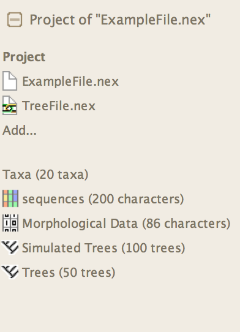

Making, opening and saving data files
Mesquite is currently designed for data files following the NEXUS format (Maddison, D.R., D.L. Swofford, and W.P. Maddison. 1997. NEXUS: An extensible file format for systematic information. Systematic Biology 46: 590-621) although it can import and export files of other formats. Thus, you could create your data file with a text editor or word processor if you followed NEXUS conventions. However, you'll probably find it easier to use Mesquite's data matrix editors, tree windows, and so on, to specify the information in the data file, and let Mesquite handle the formatting issues.Mesquite can read NEXUS files created with MacClade, and can save files that MacClade understands. For information on importing and exporting other formats, see the page on Interactions with Other Programs.
Creating a new data file
To create a new blank data file, choose File>New (i.e., the New menu item in the File menu). You'll be presented with a dialog box in which you enter the name of the set of taxa (e.g., "Drosophila") the initial number of taxa, whether or not you want to show a tree window, and whether to make a character data matrix. (The taxa could be species, or sequencies, or whatever are your "terminal taxa", "Operational Taxonomic Units", or evolutionary units.) (You can just leave the name of the set of taxa as "Untitled" if you wish, but that may become confusing if you ever have more than one set of taxa in the same file.) You can later add more taxa using (List of Taxa)List>Add Taxa or (Character Matrix Editor)>Matrix>Add Taxa, or by using the Add Taxa tool in the Character Matrix editor.When you make a new data file, you'll be presented with a list of taxa or perhaps a tree window. The taxa are automatically named "taxon 1", "taxon 2", and so on. You can rename a taxon name (e.g., "D. melanogaster", "D. willistoni", and so on) by selecting the I-beam tool in the List of Taxa window and touching it on the taxon name. There is a submenu, (List of Taxa)List>Alter Taxon Names>, that might offer other ways to edit taxon names. Taxon names can also be edited in the Character Matrix editor, either manually or using the Taxon Utilities and Taxon Names submenus of the Matrix menu.
The following video shows you how to create a new file:
A new data file does not automatically include a matrix of character data unless you request it. To add new matrices, see the section on the Character Matrix editor.
Opening an existing data file
To open an existing data file, use File>Open>File. If Mesquite detects that the file is not a NEXUS file, it will ask to you to choose its file format for importing.Saving a data file
Save a data file using File>Save File or File>Save File As. You can also export to other formats using File>Export.You can indicate that a character matrix should be written in the NEXUS file as INTERLEAVE (or not) by going to the Character Matrix Editor window and selecting the menu item Matrix>Current Matrix>Write Interleaved
Reverting a file to the last saved version
There is a Revert To Saved menu item in the File menu that reverts the project to its last saved state. Choosing this menu item is the equivalent of closing the file without saving, and then rereading it from disk. If you have linked files open (see below), then choosing it is equivalent to closing all files in the project without saving, and then rereading the home file of the project from disk.Projects and files
Mesquite is not restricted to considering only one file at a time, but instead can collect information from various files and consider it together. Such a collection of files sharing information is called a project. Implicitly when you first open a file, a project is created, one which contains only a single file. Other files can be linked into the project using the Link commands.Since Mesquite can accumulate and analyze a more or less indefinitely large collection of elements of information (several sets of taxa, data matrices, and so on), Mesquite doesn't need to respect the boundaries of files. That is, it could read a TAXA block from one file on the disk, and read a data matrix for those taxa from another file on disk, and a set of trees from another file. While other programs can handle external treefiles or command files, Mesquite can handle external character matrices, assumptions, and so on.
Mesquite therefore makes a distinction between the collection of elements of information that are currently interacting with one another in Mesquite's calculations, and the physical files on disk or server. The former collection, which may include information gathered from several files, is called a project. The set of files to which the elements of information in a project belong are said to be linked.
By default, all of the windows belonging to a project are bundled as tabs into a single main window. At the left side of this is a special panel, the Project Panel, that shows the files participating in the project, and the objects (taxa blocks, matrices, tree blocks) stored in those files. In the example shown here, there are two files linked, ExampleFile.nex and treeFile.nex. These contain a taxa block called "Taxa" to which belong two character matrices and two tree blocks:

The information within a project is available for joint calculations, but information cannot be shared between projects.
You can assign a name to your project other than the name of the home file. The project name is then displayed on the window's title bar. To change the name of the project, touch on "Project" near the top of the project panel. In the drop down menu, choose the menu itemName of Project...
Opening versus Including versus Linking files
In Mesquite there are three standard ways to read a file: Open, Include and Link.- Open — If a file is to be opened up independently of any other open files, and not share information, it should be opened using the Open File... menu item. A file opened in this way is treated as belonging to a project that is separate from any other files open at the time.
- Include — To read in the contents of a file and merge them into an existing file, so that all of its information becomes part of the existing file and is saved into that existing file, use the Include File... menu item.
- Link — To read in the contents of a file and add its information to a collection of information in a project in use, but to maintain the file separate for purposes of writing to the disk, use the Link File... menu item in the File menu. A file opened in this way will become part of the project. Because of the interdependencies among elements of information that can exist (list of taxa in a data file matches list of taxa in a tree file), it is possible that editing information that belongs to one file will also change information in a linked file. In the graphic above, Link File... was called once, to link treeFile.nex with ExampleFile.nex.
In addition, there are several special methods to import trees from other files.